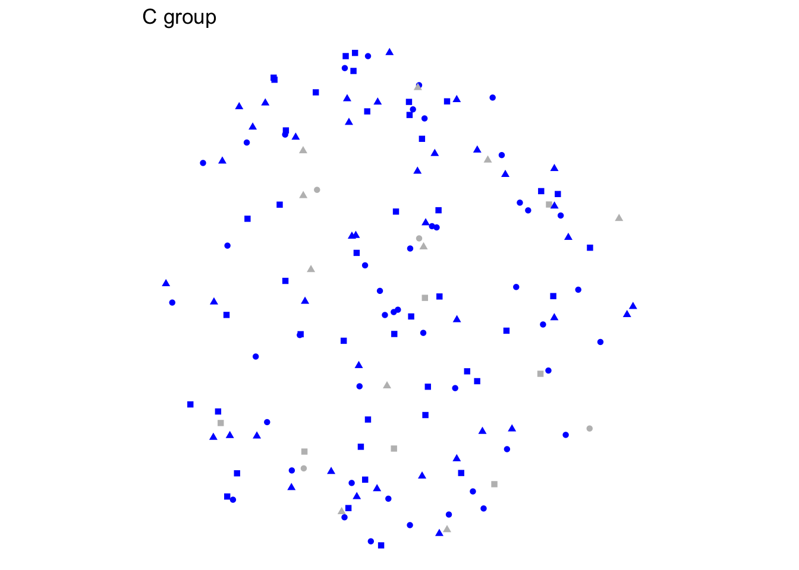
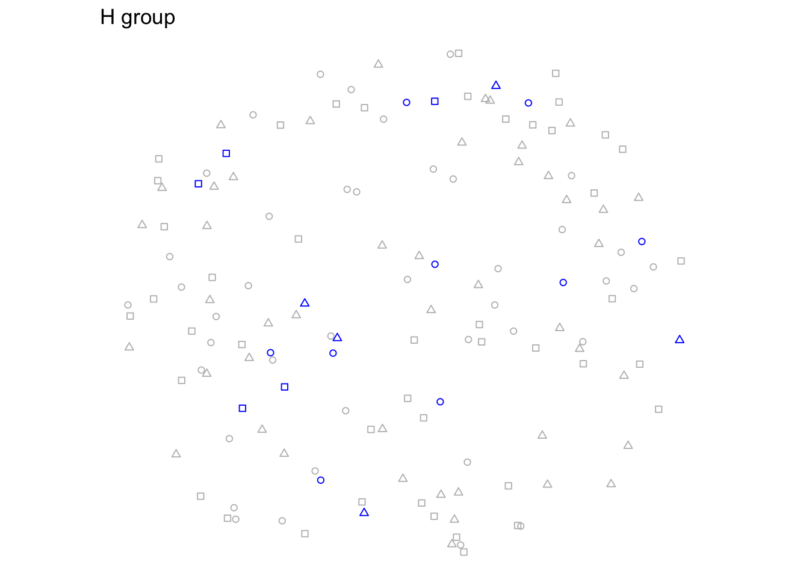
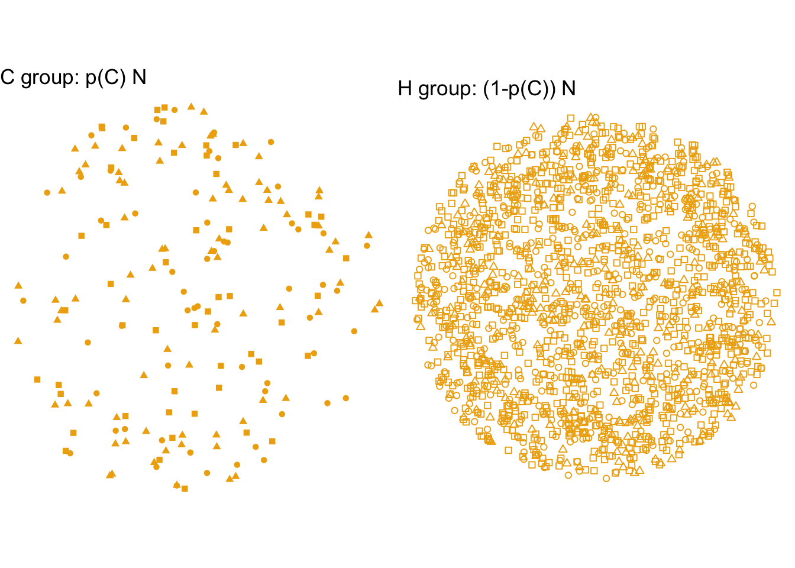
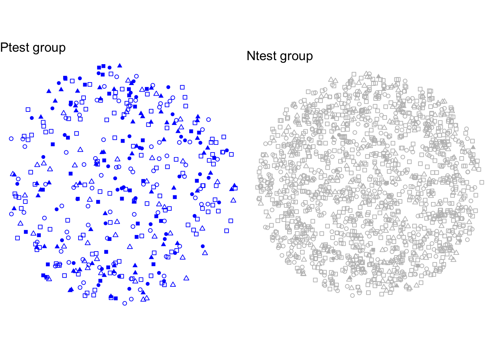
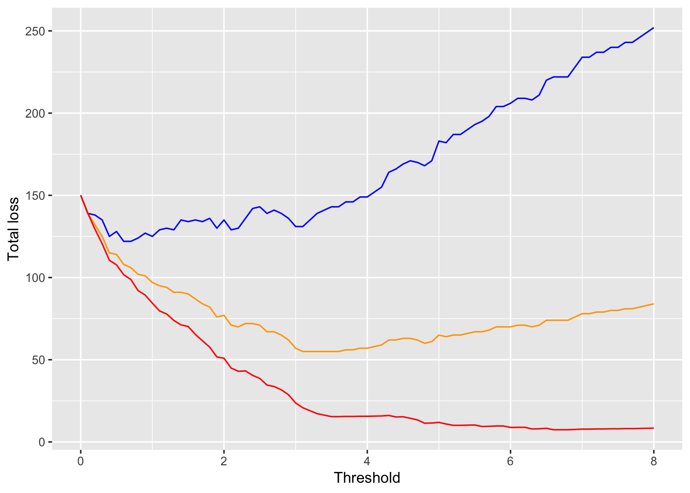

35 Accounting for prevalence
\[\newcommand{\Ptest}{\mathbb{P}} \newcommand{\Ntest}{\mathbb{N}} \newcommand{\given}{\ |\!\!|\ }\]
Prevalence
The “prevalence” of C is the fraction of the population who have condition C. Prevalence is an important factor in the performance of a classifier.


Lesson 34 used a training sample, first shown in Figure 34.3 and duplicated here in the margin. The training sample allowed us look at the consequences of the choice of threshold used in the test. That training sample had roughly equal numbers of people from the C and H groups. It’s sensible to use such a training sample in order to make sure both the C and H groups are well represented.
The prevalence among the actual population is usually very different than in the training sample. Figure 35.1 illustrates the typical situation: many people in the H group and few people in the C group.
The prevalence can be seen by how densely the H group is populated compared to the C group. The prevalence depicted in Figure 35.1 is about 10%, that is, one in ten people has condition C. In real-world conditions, prevalence is often much lower, perhaps 0.1%. Indeed, epidemiologists often move alway from a percentage scale when quantifying prevalences, often using “cases per 100,000.”
Even though the prevalence is different in Figure 34.3 than in Figure 34.3, the sensitivity is exactly the same. Likewise for the specificity.
We don’t usually have comprehensive testing of a population, so drawing a picture like Figure 35.1 has to be done theoretically based on the limited information available: prevalence (from surveys of the population) as well as sensitivity and specificity (from the training sample). This is easy to do.
The first step is to determine the number in the C group and in the H group using the population size. If the population size is \(N\), then the number in the C group will be \(p(C) N\). We are writing the prevalence here as a probability, the probability \(p(C)\) that a randomly selected person from the population has condition C. Similarly, the size of the H group is \((1-p(C)) N\).

Consider now the sensitivity. Sensitivity is relevant only to the C group; it tells the fraction in the C group who will be correctly classified. That’s enough information to know how many people in C to color blue (for \(\mathbb{P}\)) or gray (for \(\mathbb{H}\)).
Similarly, the specificity tells us what fraction among the H group to color blue and gray.
This is how Figure 35.1 was generated: specifying population size \(N\), prevalence \(p(C)\), and sensitivity and specificity. The false-positives are the blue dots in the H group, the false-negatives are the gray dots in the C group.
From the patient’s point of view
Figure 35.1 is drawn from the perspective of the epidemiologist or test developer. But it doesn’t directly provide information of use to the patient, simply because the patient has only a test result (\(\mathbb{P}\) or \(\mathbb{H}\)) but no definitive knowledge of the actual condition (C or H).
Re-organizing the epidemiologist’s graph can put it in a form relevant to the patient. Instead of plotting people by C or H, we can plot them by \(\mathbb{P}\) or \(\mathbb{H}\). This perspective is shown in Figure 35.3, which is exactly the same people as in ?fig-divided-by-condition2 but arranged differently.

For the patient who has gotten a \(\mathbb{P}\) result, the left panel of Figure 35.3 is highly informative. The patient can see that only a small fraction of the people testing \(\mathbb{P}\) actually have condition C. (The people with C are shown as filled symbols.)
The test result \(\mathbb{P}\) is not definitive, it is merely a clue.
Likelihood
A “clue” is a piece of information or an observation that tells something about a mystery, but not usally everything. As an example, consider a patient who has just woken up from a coma and doesn’t know what month it is. It is a mystery. With no information at all, it is almost equally likely to be any month. So the hypotheses in contention might be labeled Jan, Feb, March, and so on.
The person looks out the window and observes snow falling. The observation of snow is a clue. It tells something about what month it might be, but not everything. For instance, the possibility that it is July becomes much less likely if snow has been observed; the possibility that it is February (or January or March) becomes more likely.
Statistical thinkers often have to make use of clues. Suppose the coma patient is a statistician. She might try to quantify the likelihood of each month given the observation of snow. Here’s a reasonable try:
| Month | Probability of seeing snow when looking out the window for the first time each day | Notation |
|---|---|---|
| January | 2.3% | \(p(\text{snow}{\ |\!\!|\ } \text{January})\) |
| February | 3.5% | \(p(\text{snow}{\ |\!\!|\ } \text{February})\) |
| March | 2.1% | \(p(\text{snow}{\ |\!\!|\ } \text{March})\) |
| April | 1.2% | \(p(\text{snow}{\ |\!\!|\ } \text{April})\) |
| May | 0.5% | … and so on … |
| June | 0.1% | |
| July | 0 | |
| August | 0 | |
| September | 0.2% | |
| October | 0.6% | |
| November | 0.9% | |
| December | 1.4% |
The table lists 12 probabilities, one for each month. For the coma patient, these probabilities let her look up which months it is likely to be. For this reason, the probabilities are called “likelihoods.”
The coma patient has 12 hypotheses for which month it is. The table as a whole is a “likelihood function” describing how the likelihood varies from one hypothesis to another. Think of the entries in the table as having been radioed back to Earth from the 12 hypothetical planets \({\ |\!\!|\ } \text{January})\) through \({\ |\!\!|\ } \text{December})\).
It is helpful, I think, to have a notation that reminds us when we are dealing with a likelihood and a likelihood function. We will use the fancy \({\cal L}\) to identify a quantity as a likelihood. The coma patient is interested in the likelihood of snow, which we will write \({\cal L}_\text{snow}\). From the table we can see that the likelihood of snow is a function of the month, that is \({\cal L}_\text{snow}(\text{month})\), where month can be any of January through December.
This likelihood function has a valuable purpose: It will allow the coma patient to calculate the probability of it being any of the twelve months given her observation of snow, that is \(p(\text{month} {\ |\!\!|\ } \text{snow})\).
In general, likelihoods are useful for converting knowledge like \({\cal L}_a(b)\) into the form \(p(b {\ |\!\!|\ } a)\). The formula for doing the conversion is called “Bayes’ Rule.”
The form of Bayes’ rule appropriate to the coma patient allows her to calculate the probability of it being any given month from the likelihoods. We also need to account for February, with only 28 days, being shorter than the other months. So we will define a probability function, \(p(\text{month}) = \frac{\text{number of days in month}}{365}\)
Bayes’ Rule \[p(\text{month} {\ |\!\!|\ } \text{snow}) = \frac{{\cal L}_\text{snow}(\text{month}) \cdot p(\text{month})}{{\cal L}_\text{snow}(\text{Jan}) \cdot p(\text{Jan}) + {\cal L}_\text{snow}(\text{Feb}) \cdot p(\text{Feb}) + \cdots + {\cal L}_\text{snow}(\text{Dec}) \cdot p(\text{Dec})}\]
How serious is it, Doc?
Imagine a patient getting a \(\mathbb{P}\) test result and wondering what the probability is of his having condition C. That is, he wants to know \(p(C {\ |\!\!|\ } \mathbb{P})\). This is equivalent to asking, “How serious is it, Doc?”
The doctor could point to Figure 35.2 as her answer. That figure was generated by creating a population with the relevant prevalence, using the sensitivity and specificity to determine the fraction of the C and H groups with \(\mathbb{P}\) or \(\mathbb{H}\) respectively, the re-organizing into new groups: the \(\mathbb{P}\) group and the \(\mathbb{H}\) group.
Alternatively, we can do the calculation in the same way we did for the coma patient seeing snow. There, the observation of snow was the clue. Now, the test result \(\mathbb{P}\) is the clue. One of the relevant likelihoods to interpret \(\mathbb{P}\) is \({\cal L}_{\mathbb{P}}(C)\): the likelihood for a person who genuinely has condition C of getting a \(\mathbb{P}\) result. Of course, this is just another way of writing the sensitivity.
Similarly, the specificity is \({\cal L}_{\mathbb{H}}(H)\). But since our person got a \(\mathbb{P}\) result, the likelihood \({\cal L}_{\mathbb{H}}(H)\) is not directly relevant. (It would be relevant only to a person with a \(\mathbb{H}\) result.) Fortunately, there is a simple relationship between \({\cal L}_{\mathbb{P}}(H)\) and \({\cal L}_{\mathbb{H}}(H)\). If we know the probability of an H person getting a \(\mathbb{H}\) result we can figure out the probability of an H person getting a \(\mathbb{P}\) result. \[{\cal L}_{\mathbb{P}}(H) = 1 - {\cal L}_{\mathbb{H}}(H)\]
Bayes’ Rule for the person with a \(\mathbb{P}\) result is
\[p(C{\ |\!\!|\ } \mathbb{P}) = \frac{{\cal L}_{\mathbb{P}}(C) \cdot p(C)}{{\cal L}_{\mathbb{P}}(C) \cdot p(C) + {\cal L}_{\mathbb{P}}(H) \cdot p(H)}\]
Suppose that \(p(C) = 1\%\) for this age of patient. (Consequently, \(p(H) = 99\%\).) And imagine that the test taken by the patient has a threshold score of 1. From Figure 34.7 we can look up the sensitivity (\({\cal L}_{\mathbb{P}}(C) = 0.95\)) and specificity (\({\cal L}_{\mathbb{P}}(H) = 0.50)\) for the test. Substituting these numerical values into Bayes’ Rule gives
\[p(C {\ |\!\!|\ } \mathbb{P}) = \frac{0.95\times 0.01}{0.95\times 0.01 + 0.50*0.99} = 1.9\%\] The \(\mathbb{P}\) result has changed the probability that the patient has C from 1% to 1.9%. That’s big proportionally, but not so big in absolute terms.
The advantage of the Bayes’ Rule form of the calculation over the \(\mathbb{P}\) group in Figure 35.2 is that it is very easy to do the Bayes’ Rule calculation for any value of prevalence \(p(C)\). Why would we be interested in doing this?
Typically the prevalence of a condition is different for different groups in the population. For example, for an 80-year-old with a family history of C the prevalence might be 20% rather than the 1% that applied to the patient in the previous example. For the 80-year-old, the probability of having C given a \(\mathbb{P}\) result is substantially different from the 1.9% found in the example:
\[p(C {\ |\!\!|\ } \mathbb{P}) = \frac{0.95\times 0.2}{0.95\times 0.2 + 0.50*0.8} = 32\%\]
Screening tests
The reliability of a \(\mathbb{P}\) result differs depending on the prevalence of C. A consequence of this is that medical screening tests are recommended for one group of people but not for another.
For instance, the US Preventative Services Task Force (USPSTF) issues recommendations about a variety of medical screening tests. According to the Centers for Disease Control (CDC) summary:
The USPSTF recommends that women who are 50 to 74 years old and are at average risk for breast cancer get a mammogram every two years. Women who are 40 to 49 years old should talk to their doctor or other health care provider about when to start and how often to get a mammogram.
Recommendations such as this can be baffling. Why recommend mammograms only for people 50 to 74? Why not for older women as well? And how come women 40-49 are only told to “talk to their doctor?”
The CDC summary needs decoding. For instance, the “talk to [your] doctor” recommendation really means, “We don’t think a mammogram is useful to you, but we’re not going to say that straight out because you’ll think we are denying you something. We’ll let your doctor take the heat, although typically if you ask for a mammogram, your doctor will order one for you. If you are a woman younger than 40, a mammogram is even less likely to give a useful result, so unlikely that we won’t even hint you should talk to a doctor.”
The reason mammograms are not recommended for women 40-49 is that the prevalence for breast cancer is much lower in that group of people than in the 50-74 group. The prevalence of breast cancer is even lower in women younger than 40.
So what about women 75+? The prevalence of breast cancer is high in this group, but at that age, non-treatment is likely to be the most sensible option. Cancers can take a long while to develop from the stage identified on a mammogram, and at age 75+ it’s not likely to be the cause of eventual death.
The USPSTF web site goes into some detail about the reasoning for their recommendations. It’s worthwhile reading to see what considerations went into their decision-making process.
The Loss Function
NEED TO FIX THIS. The prevalence wasn’t included in the calculation.
In order to set the threshold at an optimal level, it is important to measure the impact of the positive or negative test result. This impact of course will depend on whether the test is right or wrong about the person’s true condition. It is conventional to measure the impact as a “loss,” that is, the amount of harm that is done.
If the test result is right, there’s no loss. Of course, it’s not nice that a person is C, but a \(\mathbb{P}\) test result will steer our actions to treat the condition appropriately: no loss in that.
Typically, the loss stemming from a false negative is reckoned as more than the loss of a false positive. A false negative will lead to failure to treat the person for a condition that he or she actually has.
In contrast, a false-positive will lead to unnecessary treatment. This also is a loss that includes several components that would have been avoided if the test result had been right. The cost of the treatment itself is one part of the loss. The harm that a treatment might do is another part of the loss. And the anxiety that the person and his or her family go through is still another part of the loss. These losses are not necessarily small. The woman who gets a false positive breast-cancer diagnosis will suffer from the effects of chemotherapy and the loss of breast tissue. The man who gets a false-positive prostate-cancer diagnosis may end up with urinary incontinence and impotence.
The aim in setting the threshold is to minimize the total loss. This will be the loss incurred due to false negative times the number of false negatives plus the loss incurred from a false positive times the number of false positives.
In Lesson 34, we saw that the threshold for transforming a raw test score into a \(\mathbb{P}\) or \(\mathbb{H}\) result determined the sensitivity and specificity of the test. (See Figure 34.7.) Of course, its best if both sensitivity and specificity are as high as possible, but there is a trade-off between the two: increasing sensitivity by lowering the threshold will decrease specificity. Likewise, raising the threshold will improve specificity but lower sensitivity.
The “loss function” provides a way to set an optimal value for the threshold. It is a function, because the loss depends on whether the test result is a false-positive or a false-negative.
Suppose that the
